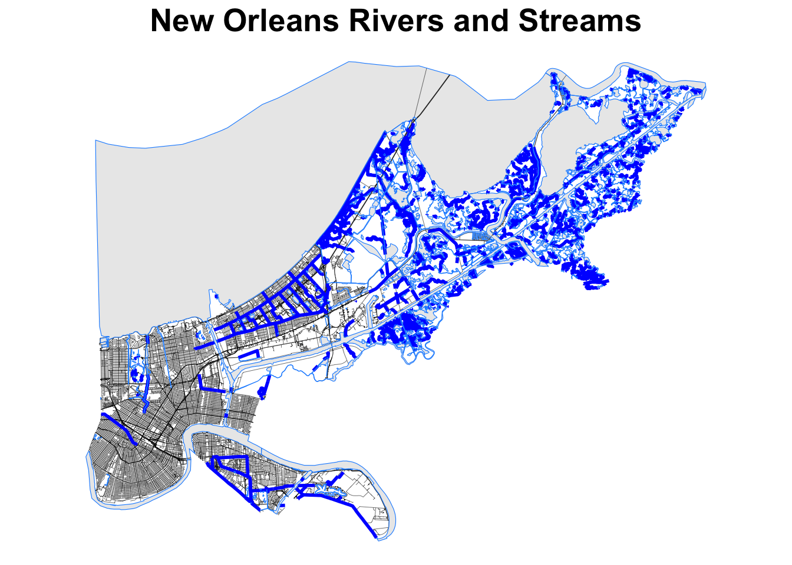
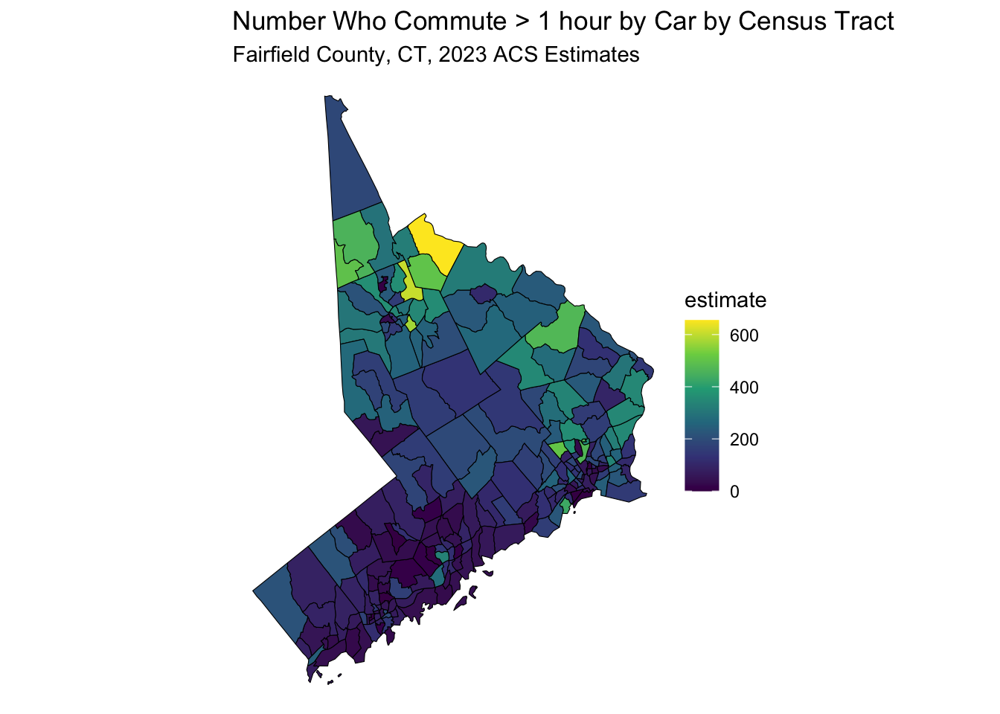
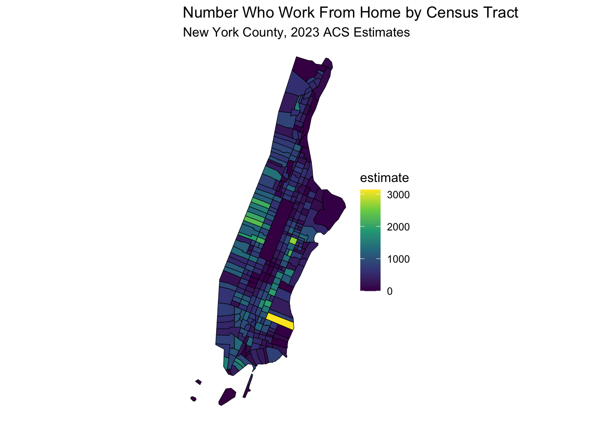
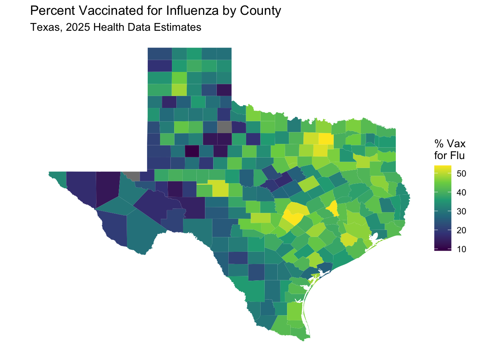
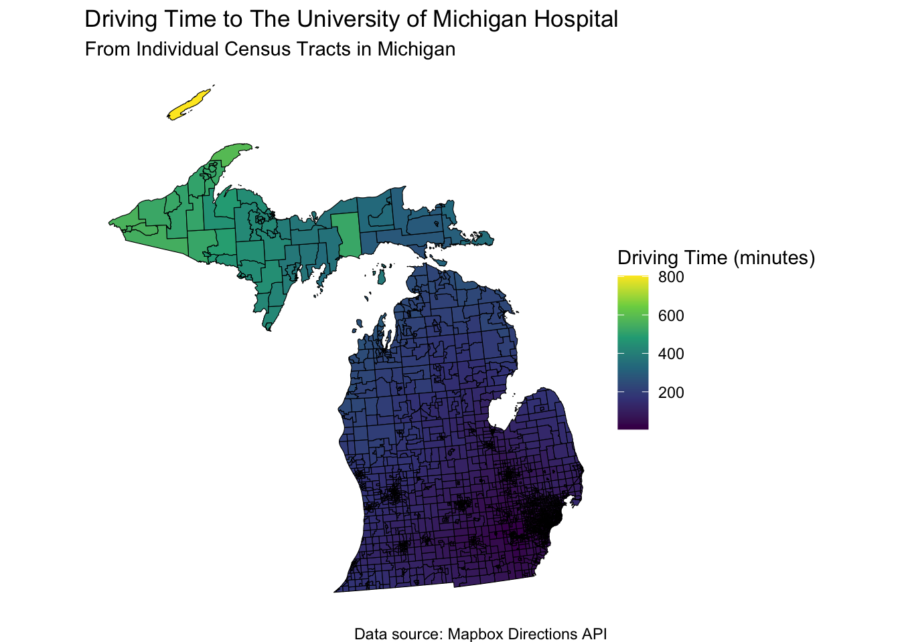
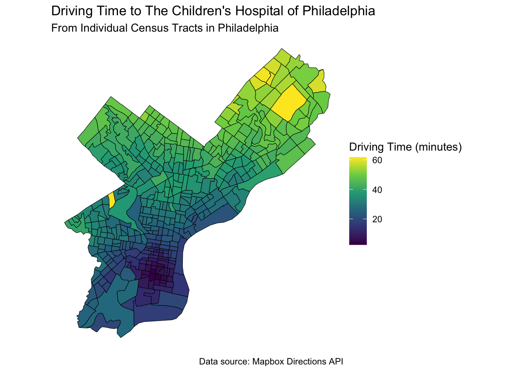
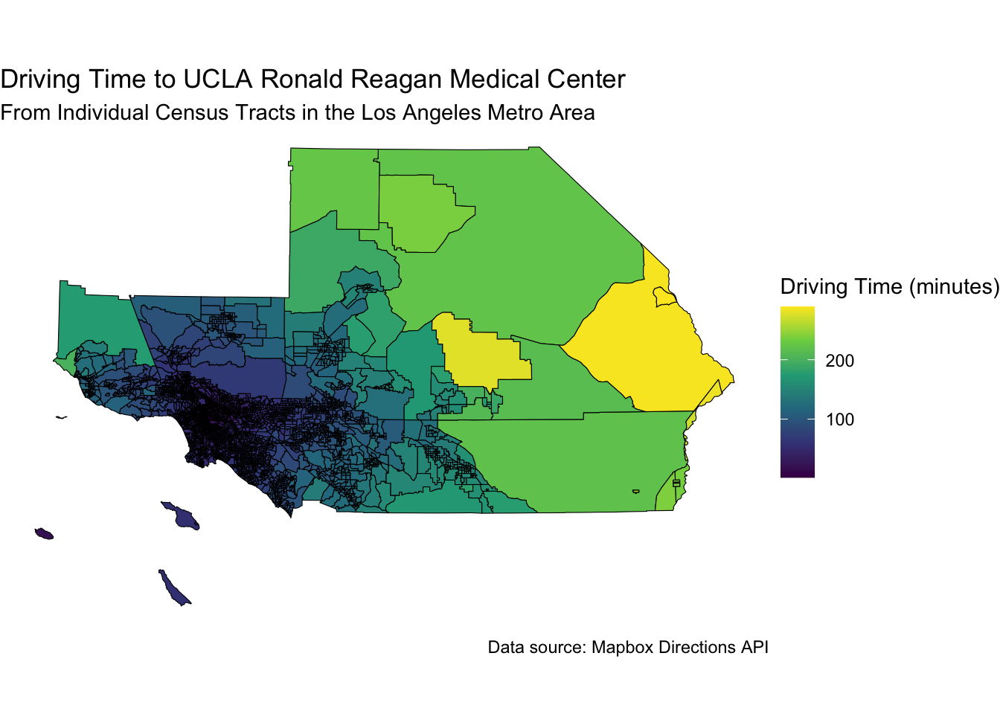

Chapter 30 Mapping Health Data in R
30.1 The {tigris} package and Basic Mapping in R
The US Census Bureau provides a wealth of geographic data that can be used for mapping and analysis. The {tigris} package in R is designed to make it easy to access and use this data. It provides functions to download shapefiles for various geographic entities, such as states, counties, tracts, block groups, roads, rivers, and more. Shapefiles are a common format for storing geographic data, and they can be used to create maps and perform spatial analysis. This Census shapefiles are TIGER/Line shapefiles, and TIGER stands for Topologically Integrated Geographic Encoding and Referencing, which are a set of shapefiles that provide geographic data for the United States. You can use the {tigris} package to download shapefiles for states, counties, tracts, block groups, roads, rivers, and more.
Let’s start with a simple map of some Midwestern states, using the states() function from the {tigris} package.
us_states <-
states(cb = TRUE) %>%
filter(STUSPS %in% c("MI", "OH", "IN", "IL", "WI", "MN", "IA", "MO")) %>%
st_transform(2163) # a coordinate reference system transformation## Warning in CPL_crs_from_input(x): GDAL Message 1: CRS EPSG:2163 is deprecated.
## Its non-deprecated replacement EPSG:9311 will be used instead. To use the
## original CRS, set the OSR_USE_NON_DEPRECATED configuration option to NO. # that is suitable for the US Midwest
ggplot() +
geom_sf(data = us_states, fill = "blue", color = "white") +
theme_void() +
labs(title = "Midwestern US States") +
theme(
plot.title = element_text(hjust = 0.5, size = 20, face = "bold")
) 
Now let’s map a few rivers and lakes in New Orleans, using the rivers() function from the {tigris} package.
no_rivers <-
linear_water(state = "LA", county = "Orleans") %>%
st_transform(2163) # a coordinate reference system transformation
no_streets <-
roads(state = "LA", county = "Orleans") %>%
st_transform(2163) # a coordinate reference system transformation
no_water <-
area_water(state = "LA", county = "Orleans") %>%
st_transform(2163) # a coordinate reference system transformation
ggplot() +
geom_sf(data = no_streets, color = "black", size = 0.1) +
geom_sf(data = no_rivers, color = "blue", size = 1) +
geom_sf(data = no_water, color = "dodgerblue") +
theme_void() +
labs(title = "New Orleans Rivers and Streams") +
theme(
plot.title = element_text(hjust = 0.5, size = 20, face = "bold")
)
You get the idea. You can map all sorts of things in the United states with the {tigris} package. You can learn more about what the {tigris} package can do at https://cran.r-project.org/web/packages/tigris/vignettes/tigris.html.
30.2 Mapping with OpenStreetMap Data
There are a number of mapping systems and packages that allow you to visualize gospatial data with R, rather than using a dedicated GIS system like ARCGIS or QGIS. Some of these packages include sf, tmap, leaflet, mapboxapi, and ggplot2.
Let’s start with a simple example of mapping.
We will use some open street map data from OpenStreetMap using the osmdata package to make a map of Ann Arbor, Michigan.
We will use the function getbb() to get bounding boxes for
streets, rivers, the coordinates for the town, etc. and then display
this with {ggplot2}.
Copy and try the plot below, and (if you have visited Ann Arbor), see if it
looks familiar.
Note the new geom - geom_sf() - which is used to plot simple features (sf) objects.
Simple features are a standard way to represent spatial data in R, and the osmdata package provides a convenient way to access OpenStreetMap data as simple features.
Try to: 1. Change colors to bring out the highways, rivers, etc. 2. Try this for a town you know well, and see if this looks familiar.
streets <- getbb("Ann Arbor Michigan USA")%>%
opq()%>%
add_osm_feature(key = "highway",
value = c("motorway", "primary",
"secondary", "tertiary")) %>%
osmdata_sf()
streets
small_streets <- getbb("Ann Arbor Michigan USA")%>%
opq()%>%
add_osm_feature(key = "highway",
value = c("residential", "living_street",
"unclassified",
"service", "footway")) %>%
osmdata_sf()
river <- getbb("Ann Arbor Michigan USA")%>%
opq()%>%
add_osm_feature(key = "waterway", value = "river") %>%
osmdata_sf()
coords <- getbb("Ann Arbor Michigan USA")
ggplot() +
geom_sf(data = streets$osm_lines,
inherit.aes = FALSE,
color = "red",
size = .6,
alpha = .8) +
geom_sf(data = small_streets$osm_lines,
inherit.aes = FALSE,
color = "bisque1",
size = .2,
alpha = .6) +
geom_sf(data = river$osm_lines,
inherit.aes = FALSE,
color = "skyblue3",
size = 1.5,
alpha = .8) +
coord_sf(xlim = c(-83.82, -83.665),
ylim = c(42.22, 42.33),
expand = FALSE) +
theme_void()+
theme(
plot.background = element_rect(fill = "gray10"))
30.3 Another Example
Let’s imagine you are trying to buy a house and be able to commute to Ann Arbor. You know that there is a tradeoff between distance and house price, and your budget is limited. Try this out using housing prices from the American Community Survey, available from the Census Beureau, and the Mapbox Directions API to get driving times from each Census tract to downtown Ann Arbor. We will use the {crsuggest} package to help us find the right coordinate system projection for our area, and the {mapboxapi} package to access the Mapbox Directions API. We will use the {tidycensus} package to get Census data, and the {tigris} package to get Census tract shapes.
library(mapboxapi)
library(tidyverse)
library(tidycensus)
library(tigris)
library(sf)
library(crsuggest)
options(tigris_use_cache = TRUE) # caching speeds things up later
# note that you need to set up a Mapbox account and get an API key
# see https://docs.mapbox.com/help/getting-started/access-tokens/
# and then store this token in your .Renviron file as MAPBOX_API_KEY
# then we will access it for this script
# mb_access_token(Sys.getenv("MAPBOX_API_KEY"), install = TRUE)
# Grab median gross house price data from the ACS for the Ann Arbor metro
county_names <- c("Washtenaw", "Wayne", "Jackson", "Ingham", "Lenawee", "Monroe", "Hillsdale", "Livingston", "Oakland", "Macomb")
# note rent variable is "B25064_001"
# can find variables by running
# ACSlist <- tidycensus::load_variables(2021, "acs5")
# then View() and search box
aa_median_house <- get_acs(
geography = "tract",
variables = "B25077_001",
state = "MI",
county = county_names,
year = 2022,
geometry = TRUE
)
# Find the right coordinate system to use; in this case we'll use 26990
print(suggest_top_crs(aa_median_house, units = "m"))
# Remove water areas - there are a lot in SE Michigan! - to help ensure that a point in a
# given Census tract will be routable
# slow but works well
aa_points <- aa_median_house %>%
st_transform(26990) %>%
erase_water(area_threshold = 0.95) %>%
st_point_on_surface()## Warning: st_point_on_surface assumes attributes are constant over geometries# Determine the location of downtown
downtown_aa <- mb_geocode("Ann Arbor City Hall, Ann Arbor, MI")
# Use mb_matrix() to calculate driving time from all A2 Area Census tracts to downtown
# slower, but more reliable than mb_directions()
time_to_downtown <- mb_matrix(
origins = aa_points,
destinations = downtown_aa
) %>%
as.vector()
# small problem - there are 4 more rows in a_rent vs aa_rent_points.
# Remove the 4 extra points in aa_rent that are not in aa_rent_points
# first reduce both to GEOIDs
aa_house_geoids <- aa_median_house |>
select(GEOID) |>
as.tibble()## Warning: `as.tibble()` was deprecated in tibble 2.0.0.
## ℹ Please use `as_tibble()` instead.
## ℹ The signature and semantics have changed, see `?as_tibble`.
## This warning is displayed once every 8 hours.
## Call `lifecycle::last_lifecycle_warnings()` to see where this warning was
## generated.aa_house_points_geoids <- aa_points |>
select(GEOID) |>
as.tibble()
# find the missing GEOIDs
missing_geoids <- aa_house_geoids |>
select(GEOID) |>
as.tibble() |>
anti_join(aa_house_points_geoids, by = c("GEOID" = "GEOID"))
# then filter these out of aa_rent
aa_median_house <- aa_median_house |>
filter(!GEOID %in% missing_geoids$GEOID)
# now can add time to aa_rent
aa_median_house$time <- time_to_downtown
# Visualize how price varies by travel time from downtown with ggplot2
ggplot(aa_median_house, aes(x = time, y = estimate)) +
geom_smooth() +
scale_y_continuous(labels = scales::dollar) +
labs(
x = "Travel time to downtown Ann Arbor (in minutes)",
y = "Median Home Value in Census tract",
title = "Median Home value by drive-time to \ndowntown Ann Arbor",
subtitle = "Census tracts in the ten-county Ann Arbor metropolitan area",
caption = "Data sources: Mapbox Directions API, 2018-2022 ACS"
) +
theme_minimal()## Warning: Removed 116 rows containing non-finite outside the scale range
## (`stat_smooth()`).
30.4 Mapping Population By County
We can also use R to map population data by county. We will zoom out to the entire state of Michigan.
This will require data from the US Census Bureau, which we can get using the {tidycensus} package.
You can search for data fields at the census website at
https://data.census.gov/table/, or use the load_variables() function in the {tidycensus} package. This one is a bit fancier, as it links a county map
with an interactive plot of income by county, using the {ggiraph} package.
Run the code below, then zoom it (with the zoom button at top left of the Plots
window) to see the details. Hover over each county to see the name and its
location on the plot.
See if you can find Wayne, Washtenaw, Keewenaw, and Leelenau counties.
Which counties have the highest and lowest incomes? Which have the most income disparity (wide CI bars)?
# Load required libraries
library(tidycensus)
#library(mapboxapi)
library(mapgl)
library(sf)
library(dplyr)
library(RColorBrewer)
library(tidyverse)
# you need to set up a Census API key
# go to the Developers website https://www.census.gov/data/developers.html
# then click on the button for "Request a Key"
# you will need to create a free account
# then you can request a key
# it will be emailed to you
# Save this key in your .Renviron file as CENSUS_API_KEY
# Set your Census API key in the code
# census_api_key("YOUR_API_KEY_HERE", install = TRUE)
# Get population data by county for Michigan
michigan_population <- get_acs(
geography = "county",
variables = "B01003_001", # Total population variable
state = "MI",
year = 2022, # Most recent available year
survey = "acs5",
geometry = TRUE, # Include geographic boundaries
cache_table = TRUE
)
# Clean and prepare the data
michigan_population <- michigan_population %>%
rename(population = estimate) %>%
mutate(
county_name = gsub(" County, Michigan", "", NAME),
# Create population categories for better visualization
pop_category = case_when(
population < 50000 ~ "< 50K",
population < 100000 ~ "50K - 100K",
population < 250000 ~ "100K - 250K",
population < 500000 ~ "250K - 500K",
population >= 500000 ~ "500K+"
),
pop_category = factor(pop_category,
levels = c(
"< 50K", "50K - 100K", "100K - 250K",
"250K - 500K", "500K+"
)
)
) %>%
filter(!is.na(population))
# Transform to appropriate CRS for Michigan
michigan_population <- st_transform(michigan_population, crs = 3857)
# Create choropleth map using mapbox
# plot(michigan_population["population"])
ggplot(data = michigan_population, aes(fill = population)) +
geom_sf() +
scale_fill_distiller(
palette = "RdPu",
direction = 1
) +
labs(
title = "Michigan Population by County, 2022",
caption = "Data source: 2022 1-year ACS, US Census Bureau",
fill = "ACS estimate"
) +
theme_void()
# linked maps
library(tigris)
library(tidycensus)
library(ggiraph)
library(tidyverse)
library(patchwork)
library(scales)
mi_income <- get_acs(
geography = "county",
variables = "B19013_001",
state = "MI",
year = 2022,
geometry = TRUE
) %>%
mutate(NAME = str_remove(NAME, " County, Michigan"))
mi_map <- ggplot(mi_income, aes(fill = estimate)) +
geom_sf_interactive(aes(data_id = GEOID, tooltip = estimate)) +
scale_fill_distiller(
palette = "Blues",
direction = 1,
guide = "none"
) +
theme_void()
mi_plot <- ggplot(mi_income, aes(
x = estimate, y = reorder(NAME, estimate),
fill = estimate
)) +
geom_errorbar(aes(xmin = estimate - moe, xmax = estimate + moe)) +
geom_point_interactive(
color = "black", size = 4, shape = 21,
aes(data_id = GEOID)
) +
scale_fill_distiller(
palette = "Blues", direction = 1,
labels = label_dollar()
) +
scale_x_continuous(labels = label_dollar()) +
labs(
title = "Household income by county in Michigan",
subtitle = "2016-2020 American Community Survey",
y = "",
x = "ACS estimate (bars represent margin of error)",
fill = "ACS estimate"
) +
theme_linedraw(base_size = 8)
girafe(ggobj = mi_map + mi_plot, width_svg = 12, height_svg = 9) %>%
girafe_options(opts_hover(css = "fill:red;"))30.5 Finding a Census Field
# You can search for variables by running
vars <- load_variables(2023, "acs5", cache = TRUE)
# View(vars)library(tidycensus)
library(tidyverse)
library(crsuggest)
library(sf)
# Example: Get median household income data for tracts in a specific county with geometry
data_sf <- get_acs(
state = "MI",
county = "Washtenaw",
geography = "tract",
variables = "B19013_001", # Median household income
geometry = TRUE, # includes shapefiles
year = 2023
)
# get top crs (coordinate reference system
wc_crs <- suggest_top_crs(data_sf)
# Plotting the data
data_sf %>%
ggplot(aes(fill = estimate)) +
geom_sf(color = 'black') + # 'color = NA' removes the outline of the polygons
scale_fill_viridis_c(option = "viridis") + # Example color scale
labs(title = "Median Household Income by Census Tract",
subtitle = "Washtenaw County, 2023 ACS Estimates") +
coord_sf(crs = wc_crs) +
theme_void() # Removes axes and grid lines for a cleaner map
30.5.1 Mapping Commute Times
data_sf <- get_acs(
state = "CA",
county = "Los Angeles",
geography = "tract",
variables = "B08134_020", # Commute > 1 hour by car
#"B08128_061", # Work from Home
geometry = TRUE, # includes shapefiles
year = 2023
)
data_sf %>%
ggplot(aes(fill = estimate)) +
geom_sf(color = 'black') + # 'color = NA' removes the outline of the polygons
scale_fill_viridis_c(option = "viridis") + # Example color scale
labs(title = "Number Who Commute > 1 hour by Car by Census Tract",
subtitle = "Los Angeles County, 2023 ACS Estimates") +
coord_sf(crs = wc_crs) +
theme_void() # Removes axes and grid lines for a cleaner map
data_sf <- get_acs(
state = "CT",
county = "Fairfield",
geography = "tract",
variables = "B08134_020", # Commute > 1 hour by car
geometry = TRUE, # includes shapefiles
year = 2021
)
data_sf %>%
ggplot(aes(fill = estimate)) +
geom_sf(color = 'black') + # 'color = NA' removes the outline of the polygons
scale_fill_viridis_c(option = "viridis") + # Example color scale
labs(title = "Number Who Commute > 1 hour by Car by Census Tract",
subtitle = "Fairfield County, CT, 2023 ACS Estimates") +
coord_sf(crs = wc_crs) +
theme_void() # Removes axes and grid lines for a cleaner map
30.5.2 Mapping Work From Home
data_sf <- get_acs(
state = "NY",
county = "New York",
geography = "tract",
variables = "B08128_061", # Work from Home
geometry = TRUE, # includes shapefiles
year = 2023
)
data_sf %>%
ggplot(aes(fill = estimate)) +
geom_sf(color = 'black') + # 'color = NA' removes the outline of the polygons
scale_fill_viridis_c(option = "viridis") + # Example color scale
labs(title = "Number Who Work From Home by Census Tract",
subtitle = "New York County, 2023 ACS Estimates") +
coord_sf(crs = wc_crs) +
theme_void() # Removes axes and grid lines for a cleaner map
30.6 Mapping and Merging Health Data
Lets start by downloading a data set by county, from the North Carolina Institute of Medicine (NCIOM), which has a downloadable Excel spreadsheet
with health data by county. This can be found at:
https://nciom.org/nc-health-data/map/
Look for the Download Data button at the lower left.
Click on this button to download and save the Excel file to your computer,
for now, in your Downloads folder.
We will go step by step on how to will this data into R, and merge it with Census data for counties in North Carolina.
Set up a folder to be the directory for this project,
and name it something like nc_health.
Create a folder named ‘data’ within this folder.
Then save the datafile as nciom_health_data.xlsx in the data directory.
Then make the nc_health folder into a New R project.
Then, in this folder, create a new quarto file called nc_health_data.qmd.
Then copy the code below into a code chunk in the quarto file, and run the code below to read in the data.
library(tidyverse)
library(sf)
library(readxl)
library(here)
nciom_health_data <- read_excel(here("data/nciom_health_data.xlsx"),
col_names = TRUE, skip = 1) |>
janitor::clean_names() Now, take a look at this data. It has variables in the leftmost column, and the counties as columns. This is a bit problematic for merging with shapefile data, which is usually in a long format, with one row per county. We will need to pivot this data to a long format, with one row per county and one column per variable.
nciom_health_data_long <- nciom_health_data |>
select(x2, x3, alamance:yancey) |>
pivot_longer(cols = !x2:x3, names_to = "county",
values_to = "value") |>
mutate(county = str_replace_all(county, "_", ""))Now this is in long format by county in lower case, with variables names and definitions in the first two columns. We can now merge this with the Census data for North Carolina counties (as long as we make the county names clean and in lower case)
nc_population <- get_acs(
geography = "county",
variables = "B01003_001", # Total population variable
state = "NC",
year = 2021,
survey = "acs5",
geometry = TRUE, # Include geographic boundaries
cache_table = TRUE
)Note that all the county names have a single word, followed by “County, North Carolina”. How will we remove this bit and make the county names lower case? Google “R remove text from string” and you will find the str_extract function, which is part of the stringr package, which is part of the tidyverse. Try to mutate the county name to a clean lower case name
30.6.1 Solution
nc_population <- nc_population %>%
mutate(county = str_extract(NAME, ".+(?= County, North Carolina)")) %>%
mutate(county = tolower(county)) %>%
mutate(county = str_replace_all(county, " ", "")) %>% # Remove spaces) |>
mutate(county = str_trim(county)) %>% # Trim whitespace
select (GEOID, county, geometry)30.7 Now to merge
We want to add the geometry from the nc_population data to the nciom_health_data_long data, in a one to many merge. Let’s start with the nciom_health_data_long data (the one), and then merge it with the nc_population data (the many).
nc_merged <- nciom_health_data_long %>%
left_join(nc_population, by = "county") %>%
rename(variable = x2, definition = x3) %>%
mutate(value = as.numeric(value)) # Ensure value is numeric ## Warning: There was 1 warning in `mutate()`.
## ℹ In argument: `value = as.numeric(value)`.
## Caused by warning:
## ! NAs introduced by coercionnc_merged %>%
filter(variable == "Opioid Prescribing Rate") |>
ggplot(aes(fill = value)) +
geom_sf(aes(geometry = geometry), color = 'black') +
scale_fill_viridis_c(option = "viridis") + # Example color scale
labs(title = "Opioid Prescribing Rate by County",
subtitle = "North Carolina, 2021 NCIOM Estimates") +
theme_void() # Removes axes and grid lines for a cleaner map
Note that Scotland County has 142.7 opioid prescriptions per 100 people, while Wake County has 41.1.
30.8 Texas Health Data
Now let’s download some health data for Texas, from the Texas Health Data website. Go to:
https://www.countyhealthrankings.org/health-data/texas/data-and-resources
Dowlnoad the first linked file, named 2025 Texas Health Data,
and save it in the data folder of your project, as texas_health_data.xlsx.
Then copy the code below into a code chunk in your quarto file, and run it to read in the data.
texas_health_data <- read_excel(here("data/texas_health_data.xlsx"),
col_names = TRUE, skip = 1,
sheet =2) |>
janitor::clean_names()See if you can pull the texas acs county data for population from the ACS to get the shapefiles, using the North Carolina example above, with the get_acs() function.
Then, merge the texas_health_data with the texas_population data, using the county name as the key.
30.8.1 Solution to ACS
texas_population <- get_acs(
geography = "county",
variables = "B01003_001", # Total population variable
state = "TX",
year = 2023,
survey = "acs5",
geometry = TRUE, # Include geographic boundaries
cache_table = TRUE
) |>
mutate(county = str_remove(NAME, " County, Texas")) %>%
select (GEOID, county, geometry)30.8.2 Solution to Merge
See if you can map the “percent_vaccinated” (for influenza) variable by county, using the same method as above.
30.8.3 Solution to Mapping
texas_merged %>%
select(GEOID, county, percent_vaccinated, geometry) |>
ggplot(aes(fill = percent_vaccinated)) +
geom_sf(aes(geometry = geometry), color = NA) + #try without borders
scale_fill_viridis_c(option = "viridis",
name = "% Vax \nfor Flu") +
labs(title = "Percent Vaccinated for Influenza by County",
subtitle = "Texas, 2025 Health Data Estimates") +
theme_void() # Removes axes and grid lines for a cleaner map
30.9 Mapping California
Let’s try mapping some health data for California, using the California Health Data website.
Go to: https://www.countyhealthrankings.org/health-data/california/data-and-resources
Download the first linked file, named 2025 California Health Data,
and save it in the data folder of your project, as california_health_data.xlsx.
Then copy the code below into a code chunk in your quarto file, and run it to read in the data.
california_health_data <- read_excel(here("data/california_health_data.xlsx"),
col_names = TRUE, skip = 1,
sheet =2) |>
janitor::clean_names()Now pull the California shapefiles, using the population variable code from tidycensus. Modify the County names as needed. Then, merge the california_health_data with the california_population data, using the county name as the key.
california_population <- get_acs(
geography = "county",
variables = "B01003_001", # Total population variable
state = "CA",
year = 2023,
survey = "acs5",
geometry = TRUE, # Include geographic boundaries
cache_table = TRUE
) |>
mutate(county = str_remove(NAME, " County, California")) %>%
select (GEOID, county, geometry)Now merge the data, and map the “low_birth_weight” variable by county, using the same method as above.
Now map
california_merged %>%
select(GEOID, county, percent_low_birth_weight, geometry) |>
ggplot(aes(fill = percent_low_birth_weight)) +
geom_sf(aes(geometry = geometry), color = NA) + #try without borders
scale_fill_viridis_c(option = "viridis",
name = "% Low \nBirth Weight") +
labs(title = "Percent Low Birth Weight by County",
subtitle = "California, 2025 Health Data Estimates") +
theme_void() # Removes axes and grid lines for a cleaner map
30.10 A bit of US geographic unit history
GEOID and FIPS are both geographic identifiers used by the Census Bureau to classify and organize geographic areas. FIPS (Federal Information Processing Standards) codes are a part of the GEOID structure, but GEOID encompasses a broader range of geographic levels and combinations. Essentially, a GEOID is a unique numeric code that identifies a specific geographic area, and often incorporates FIPS codes for certain levels like state and county.
FIPS Codes: . These are a set of standards developed by the National Institute of Standards and Technology (NIST). They are used to identify geographic entities like states, counties, and places. FIPS codes are often embedded within GEOIDs. FiPS codes were originally created in the 1970s and have been used in various federal datasets, including those from the Census Bureau, until 2008, when they were (largely) replaced by GEOIDs.
GEOIDs: . GEOIDs are unique, numeric identifiers assigned by the Census Bureau to various geographic areas, such as census tracts, block groups, and blocks. They are used to link census data to geographic boundaries. A GEOID is often a combination of FIPS codes and other Census Bureau codes, depending on the geographic level. For example, a census tract GEOID might include the state (2 digit) and county (3 digit) FIPS codes, along with a census tract code. In simpler terms, you can think of it like this: FIPS codes are like building blocks, and GEOIDs are like the structures built using those blocks, along with other components.
FIPS codes are an older part of the larger GEOID system. GEOIDs are used by the Census Bureau to uniquely identify and organize geographic areas for data tabulation down to the census block. FIPS codes are still used in various contexts, particularly in older datasets and systems. The Census Bureau assigns GEOIDs to a wide range of geographic entities, including those not specifically covered by FIPS codes. A longer GEOID with more digits means that it has more granularity, with extra digits representing more specific geographic areas, such as census tracts or block groups. A census tract GEOID (e.g., 53065950101) includes the state code (53), the county code (065), and the tract code (950101).
By now you may have noticed that the County Health Rankings website has
national health data in a spreadsheet as well.
If you go to:
https://www.countyhealthrankings.org/health-data/methodology-and-sources/data-documentation
You can find and download to your data folder a file named
2025 County Health Rankings National Data as something like
national_health_data.xlsx.
and you can also find a useful data dictionary file named
2025 County Health Rankings Data Dictionary.
There are also trend files available to explore.
Let’s start by examining the national data file by county.
First we will load the shapefiles and population by county for the
entire us using the get_acs function from tidycensus.
30.10.0.1 problems with extraction - 223 divisions not named county
Alaska - Borough (13), Census Area (11), 4 City and Borough Puerto Rico - Municipio, (78) Louisiana - Parish, (64) Connecticut - Planning Region (9) Some in Virginia - city, 40 lowercase, 2 “City County” Maryland: Baltimore city Missouri: St. Louis city Nevada: Carson City District of Columbia - District of Columbia, District of Columbia
us_counties <- get_acs(
geography = "county",
variables = "B01003_001", # Total population variable
state = NULL, # all states
year = 2023,
survey = "acs5",
geometry = TRUE, # Include geographic boundaries
cache_table = TRUE
) |>
shift_geometry() |> #shifting AK, HI, PR to fit US map better
# will need to change to case_when
mutate(state = str_remove(NAME, "^.+County,")) |>
mutate(county = str_remove(NAME, " County,.+$")) %>%
select (GEOID, state, county, geometry)Now we will read in the national health data file, and merge it with the US counties data. Note that this file includes total rows for the each state and the District of Columbia (with an empty [NA] county name).
30.11 Merge problems
Alaska - Borough, Louisiana - Parish, Connecticut - Planning Region, Some Virginia counties have “City” in the name
30.12 Instead of using names, match by GEOID (in us counties) = fips (health data)
national_health_merged <- natl_health_data_cty %>%
right_join(us_counties, by = c("fips" = "GEOID")) |>
rename(county = county.x) Now map
national_health_merged %>%
select(fips, county, average_number_of_mentally_unhealthy_days, geometry) |>
ggplot(aes(fill = average_number_of_mentally_unhealthy_days)) +
geom_sf(aes(geometry = geometry), color = NA) +
scale_fill_viridis_c(option = "viridis",
name = "Average \nMentally \nUnhealthy \nDays") +
labs(title = "Average Mentally Unhealthy Days by County",
subtitle = "US, 2025 Health Data Estimates") +
theme_void() # Removes axes and grid lines for a cleaner map
30.13 Mapping Distances
Acute illness and trauma from MVI (motor vehicle injury) is a major cause of death and disability in the US, and is a major public health problem. Outcomes are influenced by distance/time from specialty care. Using {mapboxapi} and the {tigris} package, we can map distances from a set of census tracs to a hospital at a given location, which can serve as a measure of time to travel to reach specialty care.
library(mapboxapi)
library(tigris)
library(tidyverse)
library(sf)
library(crsuggest)
# Set up Mapbox API key
# You need to set up a Mapbox account and get an API key
# see https://docs.mapbox.com/help/getting-started/access-tokens/
# and then store this token in your .Renviron file as MAPBOX_API_KEY
# mapbox_key <- Sys.getenv("MAPBOX_API_KEY")
# mb_access_token(mapbox_key, install = TRUE) # run this once
# Load Census tracts for the state of Michigan using (tigris)
mi_tracts <-
tracts(state = "MI", cb = TRUE) %>%
st_transform(2163) # a coordinate reference system transformation
# Find the right coordinate system to use; in this case we'll use 26990
mi_crs <- suggest_top_crs(mi_tracts, units = "m")
# Get the location of the University of Michigan hospital in Ann Arbor, Michigan
#
# You can use the mb_geocode() function to get the coordinates of a location
hospital_location <- mb_geocode("University of Michigan Hospital, Ann Arbor, MI")
# Use mb_matrix() to calculate driving time from all Michigan Census tracts to the hospital
# mi_tracts_points <- mi_tracts %>%
# st_transform(mi_crs) %>%
# erase_water(area_threshold = 0.95) %>% # can't drive through lakes
# st_point_on_surface()
# Now get driving time to the hospital from each tract
# Takes a few minutes to map driving times
# by default uses the centroid of each census tract as origin point
time_to_hospital <- mb_matrix(
origins = mi_tracts,
destinations = hospital_location
) %>%
as.vector()
# Add the driving time to the Census tracts data
mi_tracts$time_to_hospital <- time_to_hospital
mi_tracts$time_to_hospital <- as.numeric(mi_tracts$time_to_hospital)
# Remove any NA values (if any)
#mi_tracts <- mi_tracts %>%
#filter(!is.na(time_to_hospital))
# Visualize the driving time to the hospital using ggplot2
ggplot(mi_tracts, aes(fill = time_to_hospital)) +
geom_sf(color = "black") +
scale_fill_viridis_c(option = "viridis", name = "Driving Time (minutes)") +
labs(
title = "Driving Time to The University of Michigan Hospital",
subtitle = "From Individual Census Tracts in Michigan",
caption = "Data source: Mapbox Directions API"
) +
theme_void() +
coord_sf(crs = mi_crs)
30.14 We can narrow this down to a smaller Area, such as Philadelphia, and driving time to the Children’s Hospital of Philadelphia (CHOP).
When your child is sick, you might want to race them to the local Children’s Hospital. How long will it take?
philly_tracts <-
tracts(state = "PA", county = "Philadelphia", cb = TRUE, class="sf")
chop <- mb_geocode("Children's Hospital of Philadelphia, Philadelphia, PA")
# takes about 40 seconds
time_to_chop <- mb_matrix(
origins = philly_tracts,
destinations = chop) %>%
as.vector()
philly_tracts$time_to_chop <- time_to_chop
ggplot(philly_tracts, aes(fill = time_to_chop)) +
geom_sf(color = "black") +
scale_fill_viridis_c(option = "viridis", name = "Driving Time (minutes)") +
labs(
title = "Driving Time to The Children's Hospital of Philadelphia",
subtitle = "From Individual Census Tracts in Philadelphia",
caption = "Data source: Mapbox Directions API"
) +
theme_void()
This is not the only way to map distances, but it is a good way to get started.
You can use the Google Distance API via the {googleway} package, or the {osrm} package to access the Open Source Routing Machine, which is a free routing service that uses OpenStreetMap data.
There is the R5 routing engine, which is a free routing service that uses OpenStreetMap data, and the {r5r} package to access it.
There is the Valhalla routing engine, which is a free routing service that uses OpenStreetMap data, and the {valhallar} package to access it.
The Mapbox and Google options are great for smaller jobs as they are very quick to set up once you have an API key and they have traffic built-in. But be careful - they can get expensive quickly if you are mapping thousands of individual addresses. Mapbox limits you to 100K free geocodes per month. Google limits you to a maximum of 25 origins or 25 destinations per request, and a rate limit of 3000 elements (origins * destinations) per minute.
For bigger jobs, look to r5r and Valhalla - both based on open-source engines.
While these tools are more challenging to set up than using an API, they are well worth it for batch jobs.
Valhalla in particular can be tricky to set up; it may be best used with Docker.
There are lots of great resources in this space.
30.15 Driving to UCLA Reagan Hospital
If you are living in the traffic jam that makes up the 5 county Los Angeles metro area, you might want to know how long it will take to get to the UCLA Reagan Hospital in Westwood.
library(mapboxapi)
library(tidyverse)
library(tigris)
library(sf)
library(crsuggest)
# Set up Mapbox API key
# You need to set up a Mapbox account and get an API key
# see https://docs.mapbox.com/help/getting-started/access-tokens/
# and then store this token in your .Renviron file as MAPBOX_API_KEY
# mb_access_token(Sys.getenv("MAPBOX_API_KEY"), install = TRUE)
# Load Census tracts for the Los Angeles metro area using (tigris)
# Note that this will take a few minutes to run
la_tracts <-
tracts(state = "CA", county = c("Los Angeles", "Orange",
"Riverside", "San Bernardino", "Ventura"), cb = TRUE) %>%
st_transform(26910) # a coordinate reference system transformation
# Find the right coordinate system to use; in this case we'll use 26910
la_crs <- suggest_top_crs(la_tracts, units = "m")
# Get the location of the UCLA Reagan Hospital in Westwood, Los Angeles, California
hospital_location <- mb_geocode("UCLA Ronald Reagan Medical Center, Los Angeles, CA")
# Use mb_matrix() to calculate driving time from all Los Angeles metro Census tracts to the hospital - about 4 minutes
time_to_hospital <- mb_matrix(
origins = la_tracts,
destinations = hospital_location
) %>%
as.vector()
# Add the driving time to the Census tracts data
la_tracts$time_to_hospital <- time_to_hospital
# Remove any NA values (if any)
la_tracts <- la_tracts %>%
filter(!is.na(time_to_hospital))
# Visualize the driving time to the hospital using ggplot2
ggplot(la_tracts, aes(fill = time_to_hospital)) +
geom_sf(color = "black") +
scale_fill_viridis_c(option = "viridis", name = "Driving Time (minutes)") +
labs(
title = "Driving Time to UCLA Ronald Reagan Medical Center",
subtitle = "From Individual Census Tracts in the Los Angeles Metro Area",
caption = "Data source: Mapbox Directions API"
) +
theme_void() +
coord_sf(crs = la_crs)
Note that for some census tracts on the east side, it can take ~ 5 hours to drive to the hospital, while for some on the west side, it can take as little as 10 minutes.
30.16 You can learn about other mapping packages, like
- general R mapping ebook with chaters on tmap, ggplot2, leaflet, mapbox https://bookdown.org/nicohahn/making_maps_with_r5/docs/introduction.html